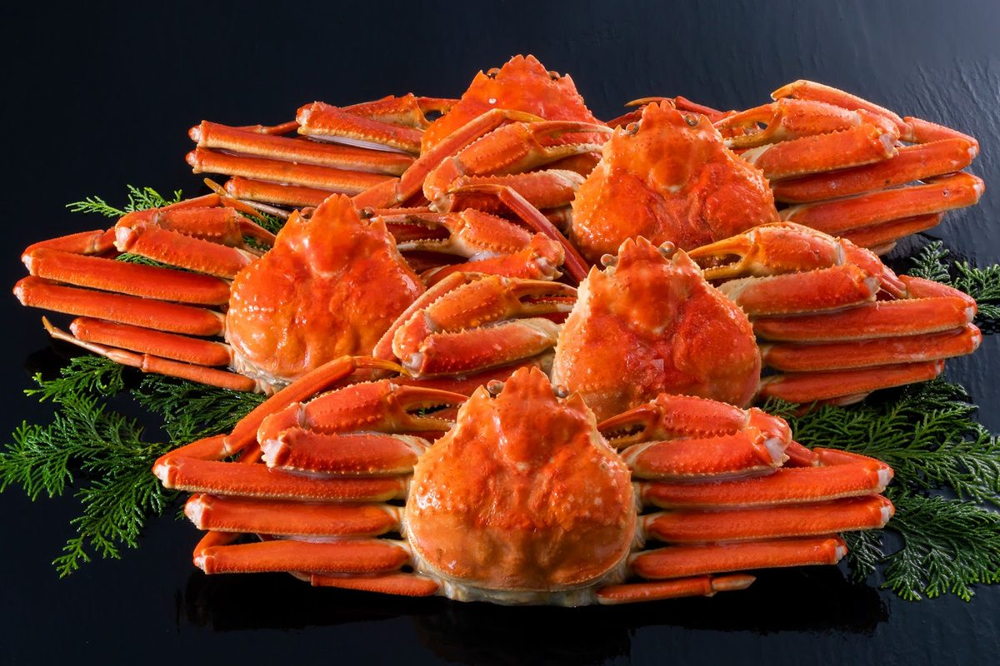

かに 解凍 方法｜冷蔵庫で何時間？水っぽくしないコツ

結論：冷凍かには食べる前日に冷蔵庫へ移して、ゆっくり解凍します。常温や電子レンジでの解凍は、身が縮んで水っぽくなる原因です。
※ リンク先は広告主の公式サイトです（アフィリエイトリンク）
冷蔵庫解凍の手順
- 前日の夜：冷凍袋から出して冷蔵庫へ（皿などにのせて水滴を受ける）
- 当日の朝：冷たい状態で身の締まりを確認する
- 調理の直前に：冷水で軽く洗い、ざるで水気を切る
- 加熱：鍋は弱火から、焼きは網で余分な水分を飛ばす
常温解凍がNGな理由
かにの身は水分が多く、急激な温度変化で細胞が破れて、旨みと一緒に水が外に出ます。結果として「身がスカスカ」「味が薄い」になります。時間はかかっても、冷蔵庫でゆっくり解凍するのが結局いちばん美味しい方法です。
鍋と焼き、それぞれのコツ
| 調理 | コツ |
|---|---|
| 鍋 | 強火で煮立てず、弱火でじっくり。身が固くなるのを防ぐ |
| 焼き | 網の上で両面をしっかり焼き、出た水分を飛ばす |
| 刺し身 | 完全に解凍する少し前の、中心が少し残る状態が食べやすい |
内容量の目安は かに 内容量の目安、通販選びの基本は かに通販の失敗しない選び方 にまとめています。
内容量・価格を公式サイトで確認する →※ リンク先は広告主の公式サイトです（アフィリエイトリンク）
内容量・価格を公式サイトで確認する →※ リンク先は広告主の公式サイトです（アフィリエイトリンク）
まとめ
かにの解凍は「前日に冷蔵庫へ、当日に冷水で洗う」の2ステップ。これだけで水っぽさを防ぎ、年末のごちそうを美味しく食べられます。